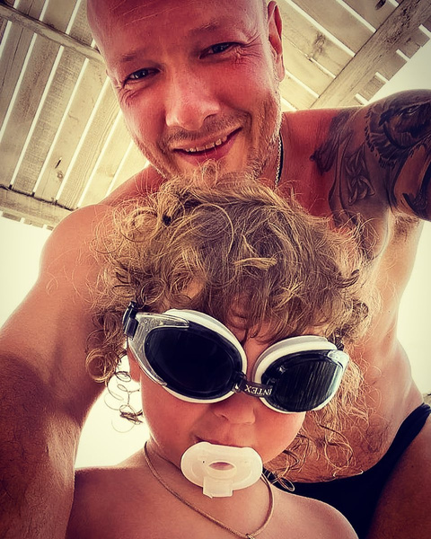

Никита Панфилов Владиславович
О личной жизни Никиты Панфилова:
Личная жизнь Никиты Панфилова сложилась не сразу.
В молодости он женился на актрисе Вере Бабенко, с которой учился в Школе-студии МХАТ. Но брак
просуществовал недолго и вскоре распался.
О втором браке:
Новое счастье постучало в дверь к Панфилову после знакомства с девушкой по имени Лада. Она
работала администратором программы «Армейский магазин» и подбирала актеров для проекта.
Никита пригласил Ладу на спектакль в театр «Сатирикон», а через год они поженились. В семье
родился сын, которого назвали Добрыней. Актер присутствовал при появлении ребенка на свет и
считает это испытание сложнейшим в жизни.
В 2016 году СМИ заговорили о том, что пара разводится. Никита удалил статус «женат» в социальных
сетях, а его супруга сменила фамилию. Оказалось, что пара разъехалась еще в 2015-м.
О третьем браке:
В конце того же года актер познакомился с девушкой по имени Ксения Соколова, она медик по
образованию, уроженка Петербурга. Хоть в интернете тиражируется информация, что она училась на
стоматолога, первое высшее
образование было инженерно-экономическое, второе (неоконченное) — по специальности
судмедэксперт. Позднее Соколова увлеклась криминальной психологией. Общение началось в
социальной сети. Вскоре девушка приехала в Москву в гости к актеру, и они
быстро нашли общий язык.
Совместные фото Никиты и Ксении вскоре часто начали появляться на их страницах в
«Инстаграме» (соцсеть запрещена в России, она принадлежит корпорации Meta, которая признана
в РФ экстремистской).
На момент знакомства Панфилов был еще официально женат, в 2016 году он получил развод от
Лады. Как следует из одного интервью, жена актера первой решила расторгнуть брак, несмотря на
старания мужчины сохранить его.
По словам актера, избранница не оставляла его в трудные моменты развода, поддерживала во
время съемок. В конце 2016 года Никита рассказал представителям журнала HELLO! о трудностях общения с
бывшей женой, заявив, что Лада превратила его жизнь в сущий ад. Артист предполагал, что
экс-супруга стремилась разрушить его союз с Ксенией.
В интервью Панфилов утверждал, что пережил предательство Лады, но сумел переступить через
себя и простить ее. Какое-то время актер общался с бывшей супругой только через адвоката. Он боялся, что
ситуация усугубится и сын станет сторониться отца. Но время все расставило по местам.
После развода с Ладой Никита решился на оформление отношений с Ксенией. Пара посетила загс
тайно, о свадьбе не знали даже родители актера. Но папарацци были проинформированы о торжестве, поэтому репортаж в тот же день появился на
страницах таблоидов. Новость застала родственников и близких Панфилова врасплох, мать даже обиделась на сына
из-за того, что он не предупредил о важном событии. Тем не менее в семье артиста невестку приняли тепло. Как позднее комментировал мужчина, на
штамп в паспорте он решился только по причине желания обвенчаться с избранницей.

Летом 2018 года в семье произошло радостное событие: супруга подарила Никите дочь Аврору.
«Я ей благодарен за это», – утверждал в интервью Панфилов.
Однако, новость долго скрывали от общественности, о рождении ребенка Панфилов рассказал
только осенью. Он также сумел наладить отношения с предыдущей супругой и регулярно виделся с сыном Добрыней
Панфиловым.
Осенью 2022-го в фан-сообществах супруги Никиты в «Телеграме» появилась новость, что они с
мужем оформили развод. Якобы Ксения сама передала эту информацию администратору группы.
Однако ни актер, ни она сама с комментариями относительно таких разительных перемен в личной
жизни не выступали. Поклонники отказывались верить в расставание, ожидая официальных
сообщений от кумира.